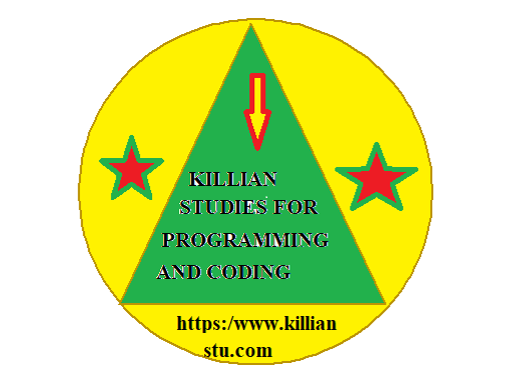

LET'S GET STARTED WITH KILLIAN STUDIES!Computer Programming is the process of giving a computer certain instructions or codes inorder to perform a specific task. A person who gives the computer certain codes to perform a specific task is called a COMPUTER PROGRAMMER. Coding can be defined as writing instructions for the computers and other hardware. The computer is then able to read the instructions(called Programs) and do what you have asked it to do. Computer language is different from programming language. A coder is a professional who uses programming languages to communicate with computers and software and make them perform certain tasks. Computers use machine code to process information. Coders write in programming languages that a computer can convert in machine language to follow a code's instructions.
console.log("Hello World"),//Prints the string to the console
print ("Hello,World!")
Class HelloWorldApp {Public static void main(string[]args)}{System.out.printIn("Hello World!");//print the string to the console}
1. Alan Turing(Father of theoretical computer science and artificial intelligence)
2. Ada Lovelace(first female computer coder)
3. Bill Gates(Founder of Microsoft)
4. Steve Jobs(Founder of Apple)
5. Linus Torvalds(Developer of Linux Operating System)
6. Mark Zuckerberg(co-founded Facebook)
7. Guido Van Rossum(Founder of Python)
Python is a cross platform easy-to-learn programming language released by Guido Van Rossum in the year 1991.
For more information about python read the PDF note and download it. But remember, this PDF note is encrpted. You need a password inorder to access the file.
PASSWORD HINT: Guido Van Rossum